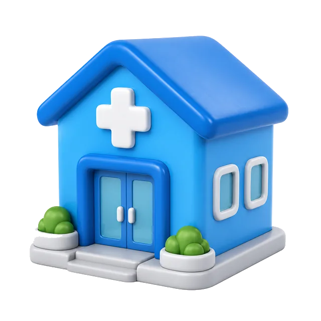

Двухместные палаты
- 5 двухместных палат в отделении
- Возможно 1–2 местное размещение
- Спокойный режим, без «проходного» коридора
Направления, срочная помощь и методы. Стоимость фиксируем до заезда. Если не уверены — врач скажет, с чего начать.
Дом, стационар или консультация — без давления и без обязательств.
Конкретные курсы вывода из запоя в стационаре. У каждой программы — расписание по дням: утренняя и вечерняя капельница, осмотры и пост медсестры.
Сутки наблюдения, утренняя и вечерняя капельница.
от 8 900 ₽ Смотреть по часам 2 дняДвое суток детокса с двумя инфузиями в день.
от 16 900 ₽ Смотреть по дням 3 дняСтандартный курс: утро/вечер капельница и восстановление сна.
от 24 900 ₽ Смотреть программу 5 днейРасширенный детокс при длительном запое.
от 39 900 ₽ Смотреть программу 7 днейПолная неделя стабилизации и спокойный выход домой.
от 54 900 ₽ Смотреть программуСнятие абстиненции, палата на одного, пост медсестры.
от 6 000 ₽Разговор с наркологом. Бесплатно при дальнейшем курсе.
0 ₽Осмотр, анализы, ЭКГ и письменный план лечения.
по осмотруТолько по показаниям. Наблюдение 30 дней.
от 4 000 ₽Психотерапия, семья, сопровождение после выписки.
от 5 000 ₽ / сутки
Для близкихЧетыре встречи. Скидка 10% при совместном обращении.
по осмотруСтабилизация дома и анонимный трансфер в клинику.
1 500 ₽Инфузия дома или вывод из запоя. Если тяжело — стационар.
от 2 500 ₽Форматы помощи от первичной консультации до сопровождения.
от 4 500 ₽Оценка состояния, безопасность дома и план для семьи.
от 4 900 ₽Маршрут помощи без давления и обещаний «навсегда».
от 4 900 ₽Индивидуальные и семейные запросы, мотивация, коммуникация.
от 4 500 ₽Разбор состояния, жалоб и тактики дальнейшей помощи.
от 4 500 ₽Дом или стационар. Женский, пивной, старческий — без морали.
от 5 600 ₽Ломка, вещества по отдельности, кодирование только после допуска.
от 6 000 ₽Скорая, тест, токсиколог, УБОД. Один номер — врач.
по состояниюСтавки и казино. Работаем с семьёй, не с запретом карт.
по осмотруДовженко, препараты, 12 шагов, Day Top — без эзотерики.
по программеВ стационаре 5 двухместных палат и 1 палата премиум. Размещение 1–2 места, круглосуточный пост медсестры.
Ответы по теме «каталог программ Альба». Если остались сомнения — позвоните дежурному.
Состав зависит от состояния: осмотр, план помощи, медикаментозная поддержка по показаниям и понятный следующий шаг. Точный объём для «каталог программ Альба» врач называет после консультации.
На сайте указана ориентировочная стоимость. Итоговая цена зависит от формата (дом, приём, стационар), длительности и объёма процедур — после оценки состояния.
Да. Обращение добровольное, 18+. Можно начать с псевдонима. Без постановки на диспансерный учёт в частном формате.
Да, при показаниях организуем выезд. Если безопаснее стационар — скажем прямо и поможем с маршрутом.
Дежурная линия 24/7. Срочные форматы доступны ночью и в выходные; плановые приёмы — по записи.
Нет. Можно позвонить или оставить заявку. Для части процедур нужен осмотр и согласие пациента.
Документ, список лекарств, контакты близких по желанию. Подробный чек-лист подскажет администратор.
Да. Родственников подключаем только с согласия пациента, кроме ситуаций угрозы жизни.
Да. Имеются противопоказания. Часть методов нельзя начинать при остром опьянении, тяжёлой соматике или без согласия.
Нет, это частная медицинская помощь. При угрозе жизни вызывайте 103.
Детокс — стабилизация острого состояния. Программа «{t}» может включать детокс, но фокус — на маршруте помощи под задачу страницы.
От нескольких часов (выезд/капельница) до недель в стационаре/реабилитации. Срок подбирают после осмотра.
Условия оплаты уточняйте у администратора. Иногда доступна поэтапная оплата по этапам помощи.
При необходимости — медицинские документы по факту оказанной помощи. Условия сообщим на консультации.
Амбулаторный формат часто совместим. При стационаре нужен перерыв — врач оценит риски.
Без ультиматумов и ярлыков. Дежурный подскажет, как говорить спокойно и какой формат возможен добровольно.
Маршрут индивидуальный. При необходимости учитываем особенности и запрос семьи.
План наблюдения, контакты дежурного, рекомендации по срыву и поддержке. Следующий шаг — по готовности человека.
Для части запросов — да, как первый ориентир. Острый риск и процедуры требуют очного осмотра.
Обычно в ближайшие минуты в рабочем контуре дежурного. Оставьте номер — перезвоним сами.
Опишите ситуацию своими словами. Дежурный врач ответит без записи разговора.
Оставьте номер — врач перезвонит в течение 10 минут.